Color legend: GT boundary green, prediction boundary magenta, TP blue tint, FP red tint, FN yellow tint.
priority=2.4670; missing_models=
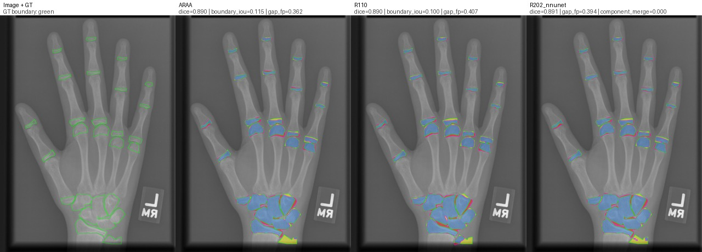
{"image": "1897.png", "priority_score": "2.4670262463045294", "failure_type": "clean_bridge_candidate", "r110_dice": "0.8897094485472428", "araa_dice": "0.8900947998909585", "nnunet_dice": "0.8910632779166908", "r110_recall": "0.9084045067718995", "araa_recall": "0.891787444545979", "r110_boundary_iou": "0.10043528186503592", "araa_boundary_iou": "0.11528142941460535", "r110_gap_fp": "0.40703211392205096", "araa_gap_fp": "0.3623479497190314", "nnunet_gap_fp": "0.39423619417300443", "r110_component_merge": "1.0", "araa_component_merge": "1.0", "nnunet_component_merge": "0.0", "r110_component_mae": "2.0", "araa_component_mae": "2.0", "nnunet_component_mae": "0.0", "component_deficit": "2.0", "merge_deficit": "1.0", "gap_excess": "0.04468416420301957", "recall_buffer_vs_araa": "0.01661706222592052", "dice_buffer_vs_araa": "-0.0003853513437157563", "boundary_buffer_vs_araa": "-0.014846147549569436"}
priority=2.4433; missing_models=
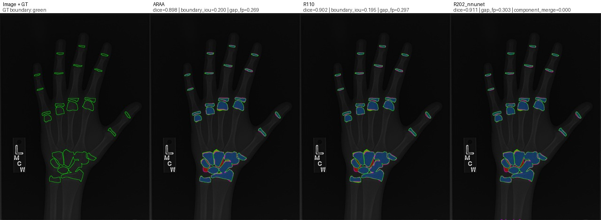
{"image": "2495.png", "priority_score": "2.4433167992591907", "failure_type": "clean_bridge_candidate", "r110_dice": "0.9018267978348093", "araa_dice": "0.8982997064812122", "nnunet_dice": "0.9113585227713554", "r110_recall": "0.9277124658290578", "araa_recall": "0.9149328700898207", "r110_boundary_iou": "0.19462537007515374", "araa_boundary_iou": "0.2004206192947915", "r110_gap_fp": "0.296883424997304", "araa_gap_fp": "0.26859340738344295", "nnunet_gap_fp": "0.3031021963406305", "r110_component_merge": "1.0", "araa_component_merge": "1.0", "nnunet_component_merge": "0.0", "r110_component_mae": "3.0", "araa_component_mae": "4.0", "nnunet_component_mae": "1.0", "component_deficit": "2.0", "merge_deficit": "1.0", "gap_excess": "0.028290017613861074", "recall_buffer_vs_araa": "0.012779595739237037", "dice_buffer_vs_araa": "0.0035270913535971893", "boundary_buffer_vs_araa": "-0.005795249219637755"}
priority=2.4163; missing_models=
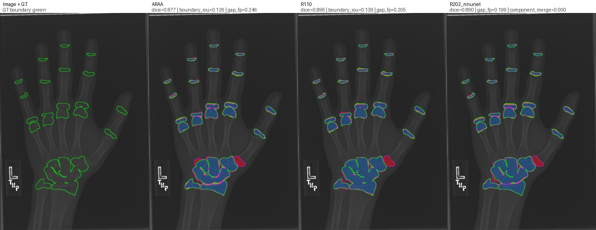
{"image": "4099.png", "priority_score": "2.4162556427875184", "failure_type": "clean_bridge_candidate", "r110_dice": "0.8956663793879678", "araa_dice": "0.8765063157147376", "nnunet_dice": "0.8900919849136951", "r110_recall": "0.8964620455247708", "araa_recall": "0.8741760222473993", "r110_boundary_iou": "0.1387416568511975", "araa_boundary_iou": "0.1262405535828098", "r110_gap_fp": "0.20533091411785034", "araa_gap_fp": "0.24628477622256784", "nnunet_gap_fp": "0.19893727319854848", "r110_component_merge": "1.0", "araa_component_merge": "0.0", "nnunet_component_merge": "0.0", "r110_component_mae": "3.0", "araa_component_mae": "1.0", "nnunet_component_mae": "1.0", "component_deficit": "2.0", "merge_deficit": "1.0", "gap_excess": "0.006393640919301863", "recall_buffer_vs_araa": "0.022286023277371503", "dice_buffer_vs_araa": "0.0191600636732302", "boundary_buffer_vs_araa": "0.012501103268387687"}
priority=2.4073; missing_models=
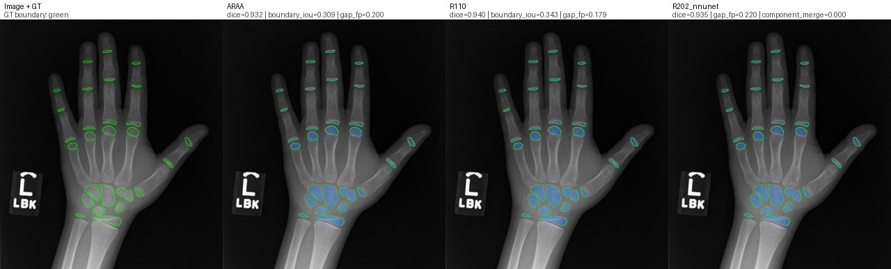
{"image": "14169.png", "priority_score": "2.407335963146368", "failure_type": "clean_bridge_candidate", "r110_dice": "0.9401795821472926", "araa_dice": "0.9317152848576534", "nnunet_dice": "0.9354409425817132", "r110_recall": "0.9686792281909593", "araa_recall": "0.9624060150375939", "r110_boundary_iou": "0.34349437627811863", "araa_boundary_iou": "0.30869511745172795", "r110_gap_fp": "0.17865000440024642", "araa_gap_fp": "0.20012320689958638", "nnunet_gap_fp": "0.22010032561823462", "r110_component_merge": "1.0", "araa_component_merge": "1.0", "nnunet_component_merge": "0.0", "r110_component_mae": "2.0", "araa_component_mae": "1.0", "nnunet_component_mae": "0.0", "component_deficit": "2.0", "merge_deficit": "1.0", "gap_excess": "0.0", "recall_buffer_vs_araa": "0.006273213153365376", "dice_buffer_vs_araa": "0.008464297289639156", "boundary_buffer_vs_araa": "0.03479925882639068"}
priority=2.2367; missing_models=
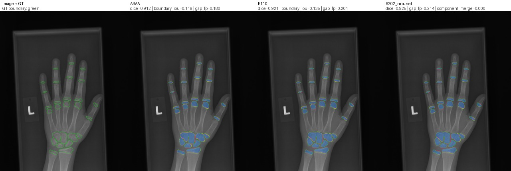
{"image": "1744.png", "priority_score": "2.2367431113923217", "failure_type": "clean_bridge_candidate", "r110_dice": "0.9208560086754947", "araa_dice": "0.9118684927091483", "nnunet_dice": "0.9254813539044063", "r110_recall": "0.9007084376743523", "araa_recall": "0.8809733881745404", "r110_boundary_iou": "0.13488256954544048", "araa_boundary_iou": "0.11947255443115609", "r110_gap_fp": "0.20102684615188127", "araa_gap_fp": "0.17957035939615315", "nnunet_gap_fp": "0.21428388975452758", "r110_component_merge": "1.0", "araa_component_merge": "0.0", "nnunet_component_merge": "0.0", "r110_component_mae": "1.0", "araa_component_mae": "0.0", "nnunet_component_mae": "0.0", "component_deficit": "1.0", "merge_deficit": "1.0", "gap_excess": "0.021456486755728116", "recall_buffer_vs_araa": "0.019735049499811863", "dice_buffer_vs_araa": "0.008987515966346393", "boundary_buffer_vs_araa": "0.015410015114284387"}
priority=2.2189; missing_models=
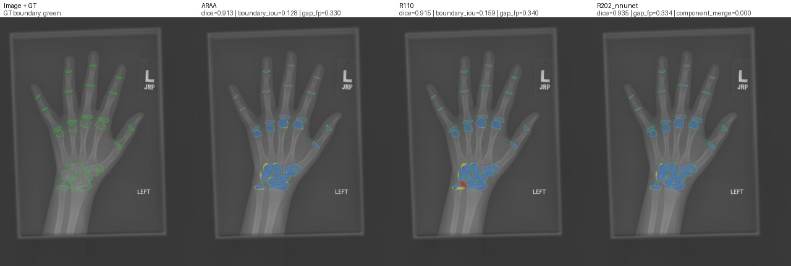
{"image": "2017.png", "priority_score": "2.2189017331534404", "failure_type": "clean_bridge_candidate", "r110_dice": "0.914707526772414", "araa_dice": "0.913270338201139", "nnunet_dice": "0.9345144510931206", "r110_recall": "0.9391513789089158", "araa_recall": "0.9218417566536872", "r110_boundary_iou": "0.158876316816231", "araa_boundary_iou": "0.1280426058583055", "r110_gap_fp": "0.3396661091299271", "araa_gap_fp": "0.33038785621863853", "nnunet_gap_fp": "0.33401710480638747", "r110_component_merge": "1.0", "araa_component_merge": "0.0", "nnunet_component_merge": "0.0", "r110_component_mae": "1.0", "araa_component_mae": "0.0", "nnunet_component_mae": "0.0", "component_deficit": "1.0", "merge_deficit": "1.0", "gap_excess": "0.009278252911288587", "recall_buffer_vs_araa": "0.017309622255228585", "dice_buffer_vs_araa": "0.00143718857127495", "boundary_buffer_vs_araa": "0.030833710957925475"}
priority=2.2150; missing_models=
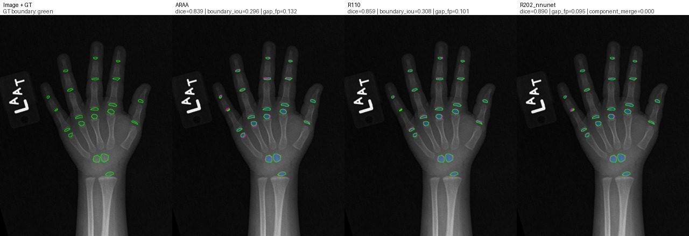
{"image": "12936.png", "priority_score": "2.2149874597553985", "failure_type": "clean_bridge_candidate", "r110_dice": "0.8592208449279028", "araa_dice": "0.8387657540199913", "nnunet_dice": "0.8899882505720116", "r110_recall": "0.8420726416263791", "araa_recall": "0.8373620924755175", "r110_boundary_iou": "0.30808685245341083", "araa_boundary_iou": "0.2961620820293197", "r110_gap_fp": "0.10050729232720355", "araa_gap_fp": "0.13210737687592475", "nnunet_gap_fp": "0.09511731135066583", "r110_component_merge": "1.0", "araa_component_merge": "0.0", "nnunet_component_merge": "0.0", "r110_component_mae": "1.0", "araa_component_mae": "0.0", "nnunet_component_mae": "0.0", "component_deficit": "1.0", "merge_deficit": "1.0", "gap_excess": "0.005389980976537728", "recall_buffer_vs_araa": "0.004710549150861554", "dice_buffer_vs_araa": "0.020455090907911533", "boundary_buffer_vs_araa": "0.011924770424091125"}
priority=2.2144; missing_models=
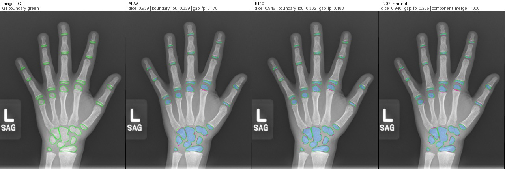
{"image": "15071.png", "priority_score": "2.2143910748302775", "failure_type": "clean_bridge_candidate", "r110_dice": "0.9461378111221049", "araa_dice": "0.9392350699348049", "nnunet_dice": "0.9398767912904838", "r110_recall": "0.972933459775565", "araa_recall": "0.9591828670776039", "r110_boundary_iou": "0.361892180914638", "araa_boundary_iou": "0.3285628382441371", "r110_gap_fp": "0.18316081250812075", "araa_gap_fp": "0.17805015375286934", "nnunet_gap_fp": "0.2352635454112348", "r110_component_merge": "1.0", "araa_component_merge": "0.0", "nnunet_component_merge": "1.0", "r110_component_mae": "2.0", "araa_component_mae": "1.0", "nnunet_component_mae": "1.0", "component_deficit": "1.0", "merge_deficit": "1.0", "gap_excess": "0.005110658755251407", "recall_buffer_vs_araa": "0.013750592697961084", "dice_buffer_vs_araa": "0.006902741187300054", "boundary_buffer_vs_araa": "0.03332934267050086"}
priority=1.5557; missing_models=
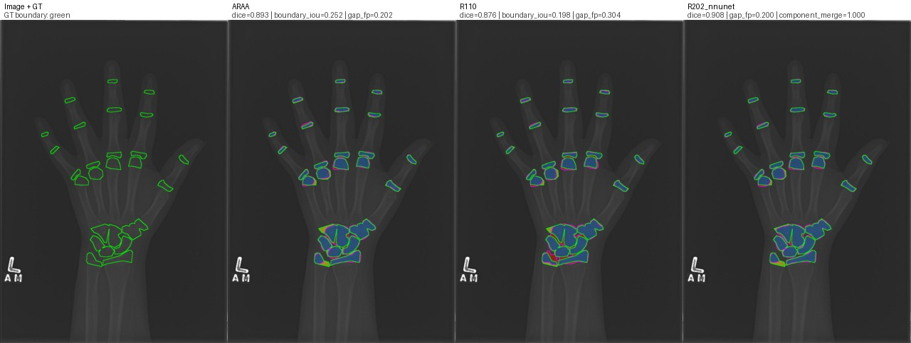
{"image": "3665.png", "priority_score": "1.5556739558608152", "failure_type": "fragmentation_risk_high_component_error", "r110_dice": "0.8759767187173145", "araa_dice": "0.8933878348501209", "nnunet_dice": "0.9077354872302866", "r110_recall": "0.914284246487375", "araa_recall": "0.892630551488531", "r110_boundary_iou": "0.19757470186252177", "araa_boundary_iou": "0.25227745965642895", "r110_gap_fp": "0.30422705923943233", "araa_gap_fp": "0.20226251199434372", "nnunet_gap_fp": "0.20044442199888896", "r110_component_merge": "1.0", "araa_component_merge": "1.0", "nnunet_component_merge": "1.0", "r110_component_mae": "8.0", "araa_component_mae": "3.0", "nnunet_component_mae": "1.0", "component_deficit": "7.0", "merge_deficit": "0.0", "gap_excess": "0.10378263724054337", "recall_buffer_vs_araa": "0.021653694998844064", "dice_buffer_vs_araa": "-0.017411116132806326", "boundary_buffer_vs_araa": "-0.05470275779390718"}
priority=1.4383; missing_models=
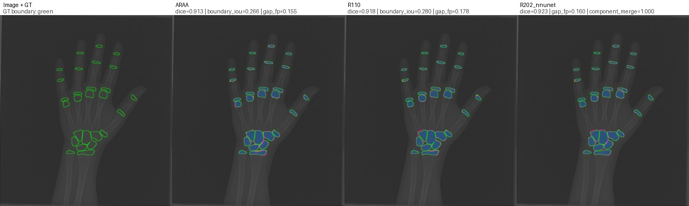
{"image": "3858.png", "priority_score": "1.4382998434546084", "failure_type": "fragmentation_risk_high_component_error", "r110_dice": "0.918127519614449", "araa_dice": "0.913298823092458", "nnunet_dice": "0.9231525966598032", "r110_recall": "0.9210622794555703", "araa_recall": "0.9015168874020439", "r110_boundary_iou": "0.2796259909207941", "araa_boundary_iou": "0.26593771980305647", "r110_gap_fp": "0.17829688042454", "araa_gap_fp": "0.15493726132024005", "nnunet_gap_fp": "0.16009522392501116", "r110_component_merge": "1.0", "araa_component_merge": "1.0", "nnunet_component_merge": "1.0", "r110_component_mae": "9.0", "araa_component_mae": "4.0", "nnunet_component_mae": "2.0", "component_deficit": "7.0", "merge_deficit": "0.0", "gap_excess": "0.023359619104299956", "recall_buffer_vs_araa": "0.019545392053526345", "dice_buffer_vs_araa": "0.004828696521991027", "boundary_buffer_vs_araa": "0.013688271117737627"}
priority=0.9325; missing_models=
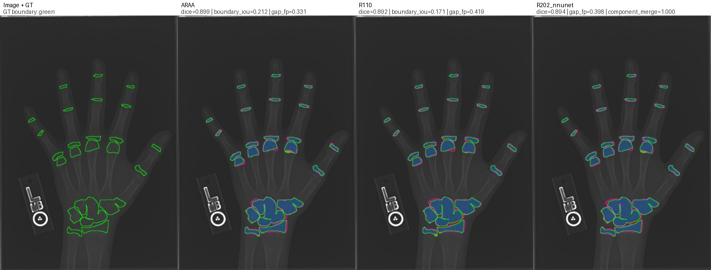
{"image": "2075.png", "priority_score": "0.932536088310218", "failure_type": "fragmentation_risk_high_component_error", "r110_dice": "0.8923308096861816", "araa_dice": "0.8993291246957313", "nnunet_dice": "0.8938977886882525", "r110_recall": "0.9649195900341638", "araa_recall": "0.9466711107407716", "r110_boundary_iou": "0.1713984663115378", "araa_boundary_iou": "0.21182982054005703", "r110_gap_fp": "0.41914331540711386", "araa_gap_fp": "0.3307859232003019", "nnunet_gap_fp": "0.39763185206151525", "r110_component_merge": "1.0", "araa_component_merge": "1.0", "nnunet_component_merge": "1.0", "r110_component_mae": "7.0", "araa_component_mae": "3.0", "nnunet_component_mae": "3.0", "component_deficit": "4.0", "merge_deficit": "0.0", "gap_excess": "0.08835739220681194", "recall_buffer_vs_araa": "0.01824847929339224", "dice_buffer_vs_araa": "-0.006998315009549727", "boundary_buffer_vs_araa": "-0.040431354228519234"}
priority=0.8585; missing_models=
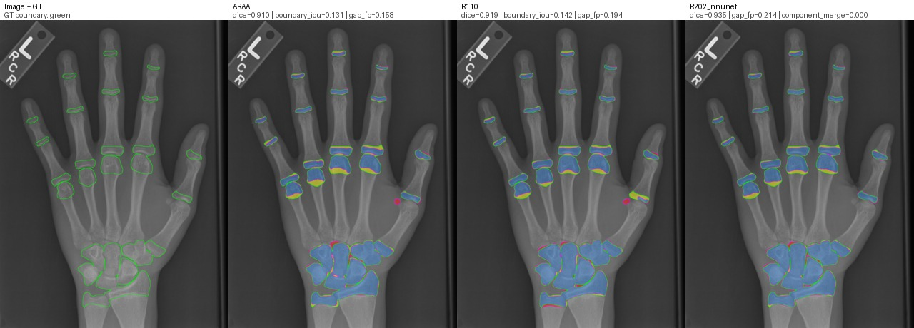
{"image": "1801.png", "priority_score": "0.8584897921761174", "failure_type": "fragmentation_risk_high_component_error", "r110_dice": "0.9191596309600393", "araa_dice": "0.9100459432384599", "nnunet_dice": "0.9353262977887912", "r110_recall": "0.8885245268443415", "araa_recall": "0.8649285438393202", "r110_boundary_iou": "0.14163839805579465", "araa_boundary_iou": "0.1310165073848827", "r110_gap_fp": "0.1941593773675873", "araa_gap_fp": "0.1577473196041968", "nnunet_gap_fp": "0.2142709552999518", "r110_component_merge": "0.0", "araa_component_merge": "0.0", "nnunet_component_merge": "0.0", "r110_component_mae": "4.0", "araa_component_mae": "2.0", "nnunet_component_mae": "0.0", "component_deficit": "4.0", "merge_deficit": "0.0", "gap_excess": "0.03641205776339049", "recall_buffer_vs_araa": "0.023595983005021304", "dice_buffer_vs_araa": "0.009113687721579389", "boundary_buffer_vs_araa": "0.010621890670911932"}
priority=0.8279; missing_models=
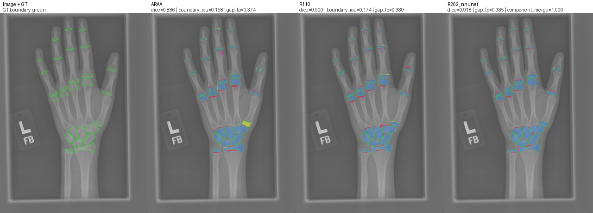
{"image": "1468.png", "priority_score": "0.8279354565090259", "failure_type": "fragmentation_risk_high_component_error", "r110_dice": "0.899671913720289", "araa_dice": "0.8864402246589997", "nnunet_dice": "0.9177087305448537", "r110_recall": "0.9555168387300057", "araa_recall": "0.921468685707931", "r110_boundary_iou": "0.17436248379196082", "araa_boundary_iou": "0.1583488472003437", "r110_gap_fp": "0.38856386888137584", "araa_gap_fp": "0.3737468763780685", "nnunet_gap_fp": "0.38533000146993973", "r110_component_merge": "1.0", "araa_component_merge": "1.0", "nnunet_component_merge": "1.0", "r110_component_mae": "9.0", "araa_component_mae": "5.0", "nnunet_component_mae": "8.0", "component_deficit": "4.0", "merge_deficit": "0.0", "gap_excess": "0.014816992503307314", "recall_buffer_vs_araa": "0.034048153022074756", "dice_buffer_vs_araa": "0.013231689061289242", "boundary_buffer_vs_araa": "0.016013636591617114"}
priority=0.6597; missing_models=
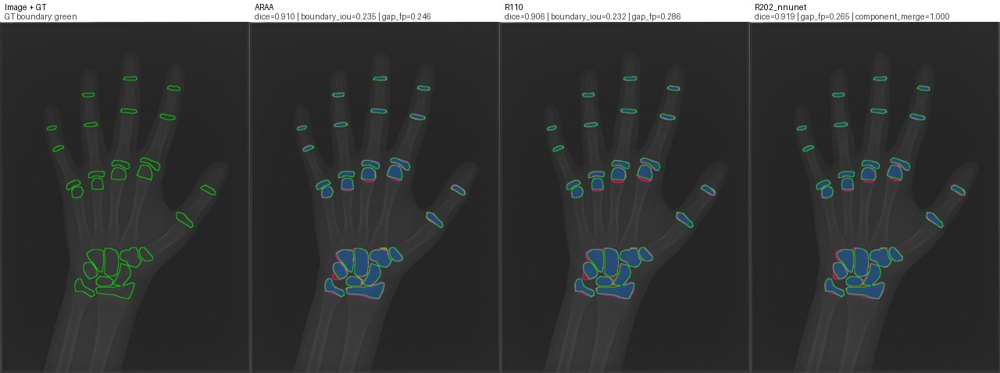
{"image": "3660.png", "priority_score": "0.6597088576363188", "failure_type": "fragmentation_risk_high_component_error", "r110_dice": "0.9064754402144403", "araa_dice": "0.910111767186841", "nnunet_dice": "0.9189539546460177", "r110_recall": "0.9485380327927992", "araa_recall": "0.9341618716066307", "r110_boundary_iou": "0.2319278764224067", "araa_boundary_iou": "0.23497124934657607", "r110_gap_fp": "0.2861666255448639", "araa_gap_fp": "0.24636072045398472", "nnunet_gap_fp": "0.2651122625215889", "r110_component_merge": "1.0", "araa_component_merge": "1.0", "nnunet_component_merge": "1.0", "r110_component_mae": "7.0", "araa_component_mae": "4.0", "nnunet_component_mae": "4.0", "component_deficit": "3.0", "merge_deficit": "0.0", "gap_excess": "0.03980590509087917", "recall_buffer_vs_araa": "0.014376161186168579", "dice_buffer_vs_araa": "-0.003636326972400683", "boundary_buffer_vs_araa": "-0.0030433729241693686"}
priority=0.6241; missing_models=
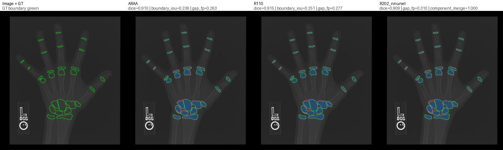
{"image": "2168.png", "priority_score": "0.624062197446389", "failure_type": "fragmentation_risk_high_component_error", "r110_dice": "0.9147099967717637", "araa_dice": "0.9099284524159561", "nnunet_dice": "0.9089767199259126", "r110_recall": "0.962411122684661", "araa_recall": "0.9460169376386939", "r110_boundary_iou": "0.251215362177929", "araa_boundary_iou": "0.23641652123327517", "r110_gap_fp": "0.2765444686471706", "araa_gap_fp": "0.2627798118366779", "nnunet_gap_fp": "0.3095889141215183", "r110_component_merge": "1.0", "araa_component_merge": "1.0", "nnunet_component_merge": "1.0", "r110_component_mae": "10.0", "araa_component_mae": "7.0", "nnunet_component_mae": "7.0", "component_deficit": "3.0", "merge_deficit": "0.0", "gap_excess": "0.01376465681049266", "recall_buffer_vs_araa": "0.016394185045967125", "dice_buffer_vs_araa": "0.0047815443558075765", "boundary_buffer_vs_araa": "0.014798840944653835"}
priority=0.6091; missing_models=
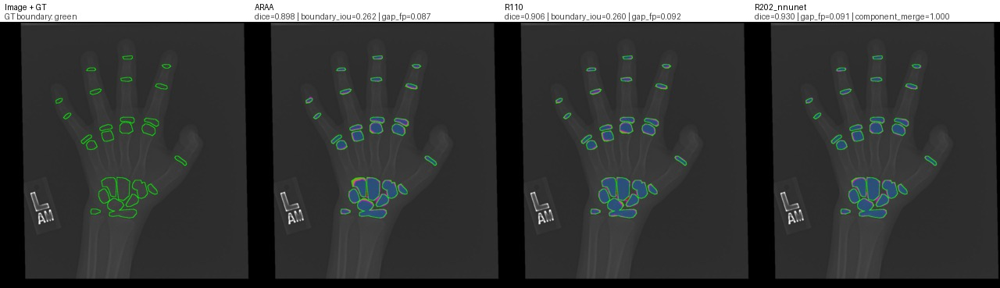
{"image": "3736.png", "priority_score": "0.6091062865460615", "failure_type": "fragmentation_risk_high_component_error", "r110_dice": "0.9056628477905073", "araa_dice": "0.8984540169133193", "nnunet_dice": "0.9298928451299794", "r110_recall": "0.8694613789202439", "araa_recall": "0.8546917227075608", "r110_boundary_iou": "0.2598718050170135", "araa_boundary_iou": "0.2615121344119477", "r110_gap_fp": "0.09183088909257561", "araa_gap_fp": "0.08696150320806599", "nnunet_gap_fp": "0.09068515123739689", "r110_component_merge": "1.0", "araa_component_merge": "1.0", "nnunet_component_merge": "1.0", "r110_component_mae": "5.0", "araa_component_mae": "2.0", "nnunet_component_mae": "2.0", "component_deficit": "3.0", "merge_deficit": "0.0", "gap_excess": "0.004869385884509622", "recall_buffer_vs_araa": "0.014769656212683113", "dice_buffer_vs_araa": "0.007208830877188044", "boundary_buffer_vs_araa": "-0.0016403293949341924"}
priority=0.4810; missing_models=
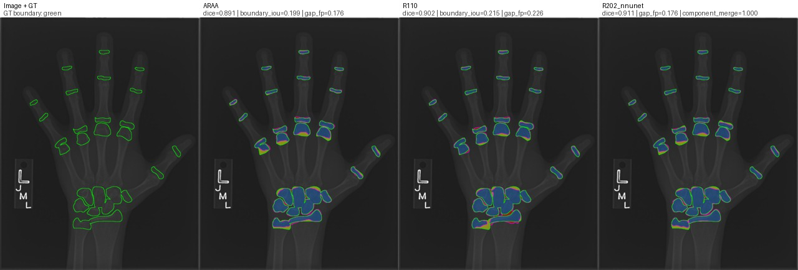
{"image": "2982.png", "priority_score": "0.48096188658359273", "failure_type": "gap_fp_candidate", "r110_dice": "0.9015703679574358", "araa_dice": "0.8913411015314248", "nnunet_dice": "0.9113070110090224", "r110_recall": "0.8952880286815645", "araa_recall": "0.856255222794296", "r110_boundary_iou": "0.21521573845276562", "araa_boundary_iou": "0.19922612741259385", "r110_gap_fp": "0.2264115690743993", "araa_gap_fp": "0.1757408168603565", "nnunet_gap_fp": "0.1757408168603565", "r110_component_merge": "1.0", "araa_component_merge": "1.0", "nnunet_component_merge": "1.0", "r110_component_mae": "3.0", "araa_component_mae": "3.0", "nnunet_component_mae": "1.0", "component_deficit": "2.0", "merge_deficit": "0.0", "gap_excess": "0.0506707522140428", "recall_buffer_vs_araa": "0.03903280588726854", "dice_buffer_vs_araa": "0.010229266426011074", "boundary_buffer_vs_araa": "0.01598961104017177"}
priority=0.4696; missing_models=
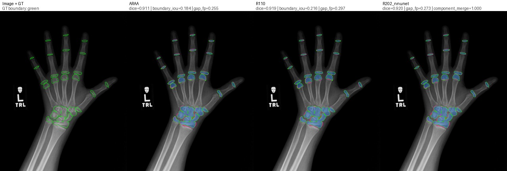
{"image": "6671.png", "priority_score": "0.469608779561555", "failure_type": "gap_fp_candidate", "r110_dice": "0.9194232663476379", "araa_dice": "0.9113687330126706", "nnunet_dice": "0.9203548122386777", "r110_recall": "0.9537233700199523", "araa_recall": "0.9253073308875587", "r110_boundary_iou": "0.2158637784243992", "araa_boundary_iou": "0.18422976501305482", "r110_gap_fp": "0.2965006106034446", "araa_gap_fp": "0.25460058112603695", "nnunet_gap_fp": "0.27283446330062744", "r110_component_merge": "1.0", "araa_component_merge": "1.0", "nnunet_component_merge": "1.0", "r110_component_mae": "4.0", "araa_component_mae": "2.0", "nnunet_component_mae": "2.0", "component_deficit": "2.0", "merge_deficit": "0.0", "gap_excess": "0.041900029477407674", "recall_buffer_vs_araa": "0.028416039132393656", "dice_buffer_vs_araa": "0.008054533334967307", "boundary_buffer_vs_araa": "0.031634013411344364"}
priority=0.4226; missing_models=
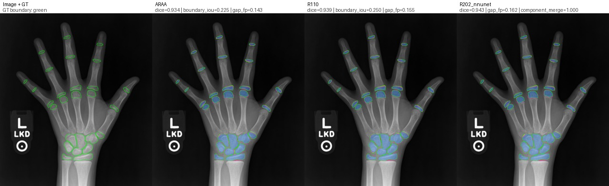
{"image": "15464.png", "priority_score": "0.4226109981837641", "failure_type": "mixed_or_low_priority", "r110_dice": "0.9392608977366669", "araa_dice": "0.9339778367445817", "nnunet_dice": "0.9431246219499337", "r110_recall": "0.9317353192149562", "araa_recall": "0.9185921517780955", "r110_boundary_iou": "0.2501886624938962", "araa_boundary_iou": "0.22509366485013624", "r110_gap_fp": "0.1550506079750017", "araa_gap_fp": "0.1433666191155492", "nnunet_gap_fp": "0.1616398342503906", "r110_component_merge": "1.0", "araa_component_merge": "1.0", "nnunet_component_merge": "1.0", "r110_component_mae": "5.0", "araa_component_mae": "3.0", "nnunet_component_mae": "3.0", "component_deficit": "2.0", "merge_deficit": "0.0", "gap_excess": "0.011683988859452488", "recall_buffer_vs_araa": "0.013143167436860725", "dice_buffer_vs_araa": "0.005283060992085198", "boundary_buffer_vs_araa": "0.02509499764375997"}
priority=0.4198; missing_models=
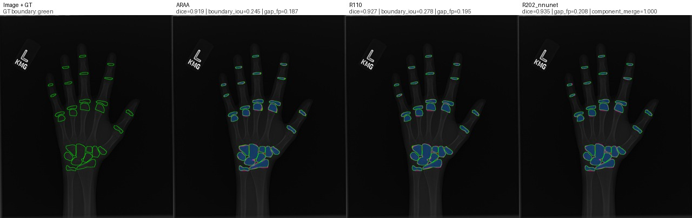
{"image": "3407.png", "priority_score": "0.4197837325239532", "failure_type": "mixed_or_low_priority", "r110_dice": "0.9274839101498907", "araa_dice": "0.9189876442077958", "nnunet_dice": "0.9354427107222978", "r110_recall": "0.9356046424560089", "araa_recall": "0.9163915455566523", "r110_boundary_iou": "0.27817719278840836", "araa_boundary_iou": "0.24501884760366183", "r110_gap_fp": "0.19505895096446277", "araa_gap_fp": "0.18660167479065118", "nnunet_gap_fp": "0.20755738865975087", "r110_component_merge": "1.0", "araa_component_merge": "1.0", "nnunet_component_merge": "1.0", "r110_component_mae": "10.0", "araa_component_mae": "10.0", "nnunet_component_mae": "8.0", "component_deficit": "2.0", "merge_deficit": "0.0", "gap_excess": "0.00845727617381159", "recall_buffer_vs_araa": "0.019213096899356685", "dice_buffer_vs_araa": "0.00849626594209496", "boundary_buffer_vs_araa": "0.03315834518474653"}
priority=0.4171; missing_models=
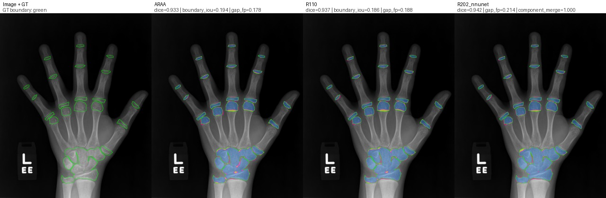
{"image": "7252.png", "priority_score": "0.41710548050535723", "failure_type": "mixed_or_low_priority", "r110_dice": "0.9372387426922333", "araa_dice": "0.9333762134833141", "nnunet_dice": "0.9424980511553339", "r110_recall": "0.9235482523325442", "araa_recall": "0.9146798202859886", "r110_boundary_iou": "0.18550692764460083", "araa_boundary_iou": "0.19430070432657756", "r110_gap_fp": "0.18843539488523792", "araa_gap_fp": "0.17767549608315297", "nnunet_gap_fp": "0.21403968665223885", "r110_component_merge": "1.0", "araa_component_merge": "1.0", "nnunet_component_merge": "1.0", "r110_component_mae": "4.0", "araa_component_mae": "2.0", "nnunet_component_mae": "2.0", "component_deficit": "2.0", "merge_deficit": "0.0", "gap_excess": "0.010759898802084944", "recall_buffer_vs_araa": "0.00886843204655563", "dice_buffer_vs_araa": "0.003862529208919163", "boundary_buffer_vs_araa": "-0.008793776681976728"}
priority=0.4084; missing_models=
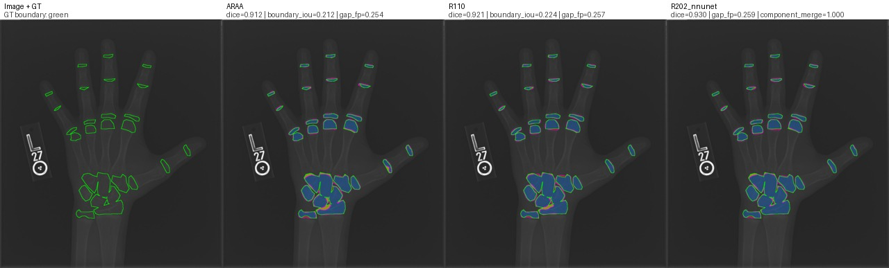
{"image": "2498.png", "priority_score": "0.40843518248953975", "failure_type": "mixed_or_low_priority", "r110_dice": "0.9213934121848507", "araa_dice": "0.9124769308204239", "nnunet_dice": "0.930207034955277", "r110_recall": "0.9424743001228422", "araa_recall": "0.9230296760845671", "r110_boundary_iou": "0.22355130249867092", "araa_boundary_iou": "0.21229929688319865", "r110_gap_fp": "0.2566205078860394", "araa_gap_fp": "0.2536083336819646", "nnunet_gap_fp": "0.25929799606743925", "r110_component_merge": "1.0", "araa_component_merge": "1.0", "nnunet_component_merge": "1.0", "r110_component_mae": "4.0", "araa_component_mae": "3.0", "nnunet_component_mae": "2.0", "component_deficit": "2.0", "merge_deficit": "0.0", "gap_excess": "0.003012174204074791", "recall_buffer_vs_araa": "0.01944462403827507", "dice_buffer_vs_araa": "0.008916481364426798", "boundary_buffer_vs_araa": "0.011252005615472266"}
priority=0.3975; missing_models=
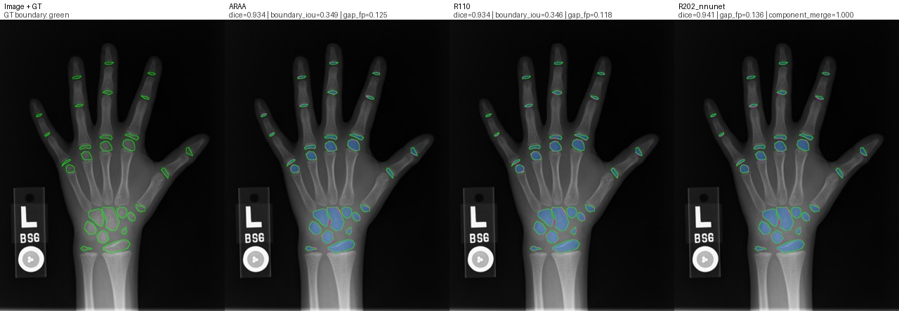
{"image": "7035.png", "priority_score": "0.3974768157679199", "failure_type": "mixed_or_low_priority", "r110_dice": "0.9336329984135379", "araa_dice": "0.9344950578449308", "nnunet_dice": "0.9410234735678523", "r110_recall": "0.9329176464371581", "araa_recall": "0.9379640149013184", "r110_boundary_iou": "0.34624260781768357", "araa_boundary_iou": "0.34940531301189376", "r110_gap_fp": "0.11789062871829042", "araa_gap_fp": "0.1245538051496835", "nnunet_gap_fp": "0.13640474037408976", "r110_component_merge": "1.0", "araa_component_merge": "1.0", "nnunet_component_merge": "1.0", "r110_component_mae": "4.0", "araa_component_mae": "2.0", "nnunet_component_mae": "2.0", "component_deficit": "2.0", "merge_deficit": "0.0", "gap_excess": "0.0", "recall_buffer_vs_araa": "-0.005046368464160289", "dice_buffer_vs_araa": "-0.0008620594313929475", "boundary_buffer_vs_araa": "-0.0031627051942101914"}
priority=0.3929; missing_models=
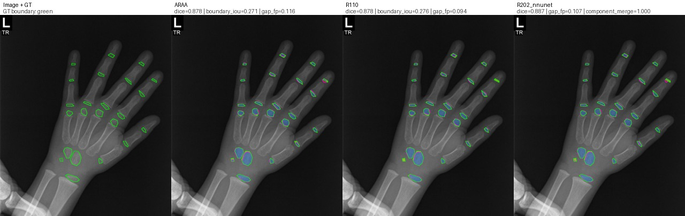
{"image": "9194.png", "priority_score": "0.39294073149379155", "failure_type": "recall_risk_do_not_cut_aggressively", "r110_dice": "0.8778888098258206", "araa_dice": "0.8777437080664258", "nnunet_dice": "0.8866179458410407", "r110_recall": "0.8431186118374139", "araa_recall": "0.8590444497266461", "r110_boundary_iou": "0.2764052583862194", "araa_boundary_iou": "0.27062275839582656", "r110_gap_fp": "0.09415326941100137", "araa_gap_fp": "0.1161415903683945", "nnunet_gap_fp": "0.10720207627424122", "r110_component_merge": "1.0", "araa_component_merge": "1.0", "nnunet_component_merge": "1.0", "r110_component_mae": "3.0", "araa_component_mae": "1.0", "nnunet_component_mae": "1.0", "component_deficit": "2.0", "merge_deficit": "0.0", "gap_excess": "0.0", "recall_buffer_vs_araa": "-0.015925837889232186", "dice_buffer_vs_araa": "0.00014510175939486114", "boundary_buffer_vs_araa": "0.00578249999039282"}
priority=0.3130; missing_models=
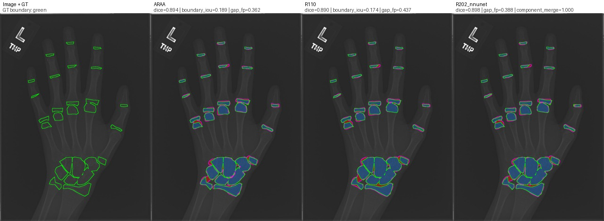
{"image": "2050.png", "priority_score": "0.3129925403871676", "failure_type": "gap_fp_candidate", "r110_dice": "0.890068981601916", "araa_dice": "0.8939149958132816", "nnunet_dice": "0.8975840575094408", "r110_recall": "0.972079079883222", "araa_recall": "0.9517408938613163", "r110_boundary_iou": "0.17433593083442353", "araa_boundary_iou": "0.1894810357795208", "r110_gap_fp": "0.43714246487574937", "araa_gap_fp": "0.36181410461763763", "nnunet_gap_fp": "0.38794563177886593", "r110_component_merge": "1.0", "araa_component_merge": "1.0", "nnunet_component_merge": "1.0", "r110_component_mae": "7.0", "araa_component_mae": "6.0", "nnunet_component_mae": "6.0", "component_deficit": "1.0", "merge_deficit": "0.0", "gap_excess": "0.07532836025811174", "recall_buffer_vs_araa": "0.020338186021905624", "dice_buffer_vs_araa": "-0.003846014211365545", "boundary_buffer_vs_araa": "-0.01514510494509727"}
priority=0.2132; missing_models=
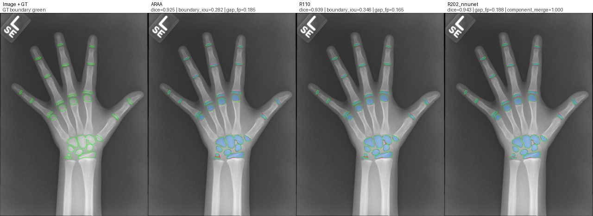
{"image": "14543.png", "priority_score": "0.21315184053523745", "failure_type": "mixed_or_low_priority", "r110_dice": "0.9391355890343295", "araa_dice": "0.92533761675293", "nnunet_dice": "0.942660237012163", "r110_recall": "0.9580553483965896", "araa_recall": "0.9405196218732993", "r110_boundary_iou": "0.3463405641246236", "araa_boundary_iou": "0.28165824769203973", "r110_gap_fp": "0.16531888286786162", "araa_gap_fp": "0.18520216756982075", "nnunet_gap_fp": "0.18795331388078365", "r110_component_merge": "1.0", "araa_component_merge": "1.0", "nnunet_component_merge": "1.0", "r110_component_mae": "3.0", "araa_component_mae": "3.0", "nnunet_component_mae": "2.0", "component_deficit": "1.0", "merge_deficit": "0.0", "gap_excess": "0.0", "recall_buffer_vs_araa": "0.017535726523290274", "dice_buffer_vs_araa": "0.013797972281399451", "boundary_buffer_vs_araa": "0.06468231643258388"}
priority=0.2078; missing_models=
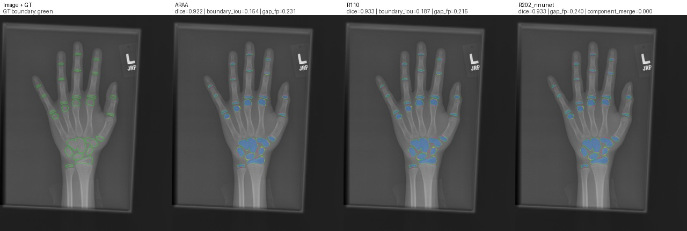
{"image": "1954.png", "priority_score": "0.20782458895433806", "failure_type": "mixed_or_low_priority", "r110_dice": "0.9333773435437022", "araa_dice": "0.9216468050496835", "nnunet_dice": "0.9334637537499508", "r110_recall": "0.9329667429174732", "araa_recall": "0.9172356149920816", "r110_boundary_iou": "0.1870672367475122", "araa_boundary_iou": "0.15445420787528955", "r110_gap_fp": "0.2146208207138191", "araa_gap_fp": "0.2311895005641665", "nnunet_gap_fp": "0.24048340162717502", "r110_component_merge": "0.0", "araa_component_merge": "0.0", "nnunet_component_merge": "0.0", "r110_component_mae": "1.0", "araa_component_mae": "0.0", "nnunet_component_mae": "0.0", "component_deficit": "1.0", "merge_deficit": "0.0", "gap_excess": "0.0", "recall_buffer_vs_araa": "0.015731127925391553", "dice_buffer_vs_araa": "0.011730538494018616", "boundary_buffer_vs_araa": "0.032613028872222644"}
priority=0.1991; missing_models=
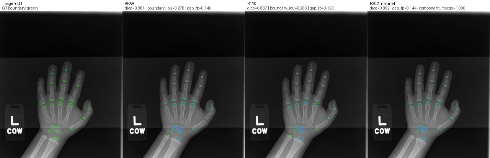
{"image": "7484.png", "priority_score": "0.19906119998762828", "failure_type": "recall_risk_do_not_cut_aggressively", "r110_dice": "0.8865558688232675", "araa_dice": "0.8807017543859649", "nnunet_dice": "0.8916924195600799", "r110_recall": "0.8776994270603791", "araa_recall": "0.8849713530189511", "r110_boundary_iou": "0.28598031391327483", "araa_boundary_iou": "0.2777560848626838", "r110_gap_fp": "0.12251743313619913", "araa_gap_fp": "0.1458204607644099", "nnunet_gap_fp": "0.14370200370729985", "r110_component_merge": "1.0", "araa_component_merge": "1.0", "nnunet_component_merge": "1.0", "r110_component_mae": "3.0", "araa_component_mae": "2.0", "nnunet_component_mae": "3.0", "component_deficit": "1.0", "merge_deficit": "0.0", "gap_excess": "0.0", "recall_buffer_vs_araa": "-0.0072719259585720675", "dice_buffer_vs_araa": "0.00585411443730266", "boundary_buffer_vs_araa": "0.008224229050591003"}
priority=0.1973; missing_models=
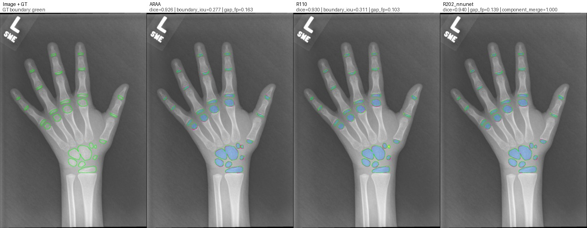
{"image": "14289.png", "priority_score": "0.19732230144674553", "failure_type": "mixed_or_low_priority", "r110_dice": "0.9302358759748907", "araa_dice": "0.9255379618351603", "nnunet_dice": "0.9403031741803991", "r110_recall": "0.9141935785390475", "araa_recall": "0.9322101229144273", "r110_boundary_iou": "0.31100911050838026", "araa_boundary_iou": "0.27663514317836124", "r110_gap_fp": "0.1026497858521203", "araa_gap_fp": "0.1626582576363722", "nnunet_gap_fp": "0.13917258907139832", "r110_component_merge": "1.0", "araa_component_merge": "1.0", "nnunet_component_merge": "1.0", "r110_component_mae": "2.0", "araa_component_mae": "2.0", "nnunet_component_mae": "1.0", "component_deficit": "1.0", "merge_deficit": "0.0", "gap_excess": "0.0", "recall_buffer_vs_araa": "-0.018016544375379806", "dice_buffer_vs_araa": "0.004697914139730308", "boundary_buffer_vs_araa": "0.03437396733001902"}
priority=0.1060; missing_models=
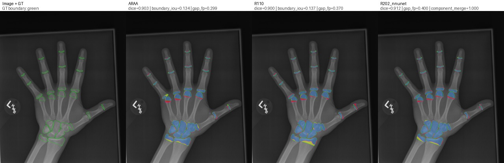
{"image": "3900.png", "priority_score": "0.10595407211539173", "failure_type": "gap_fp_candidate", "r110_dice": "0.8997330791229743", "araa_dice": "0.9029477825499354", "nnunet_dice": "0.9121006284574568", "r110_recall": "0.9178003597996791", "araa_recall": "0.9128215101862206", "r110_boundary_iou": "0.1373663448562234", "araa_boundary_iou": "0.13393888480520844", "r110_gap_fp": "0.36963726131163066", "araa_gap_fp": "0.29934395923980434", "nnunet_gap_fp": "0.4003877629235521", "r110_component_merge": "0.0", "araa_component_merge": "1.0", "nnunet_component_merge": "1.0", "r110_component_mae": "1.0", "araa_component_mae": "5.0", "nnunet_component_mae": "4.0", "component_deficit": "0.0", "merge_deficit": "0.0", "gap_excess": "0.07029330207182632", "recall_buffer_vs_araa": "0.004978849613458514", "dice_buffer_vs_araa": "-0.003214703426961063", "boundary_buffer_vs_araa": "0.0034274600510149633"}
priority=0.0779; missing_models=
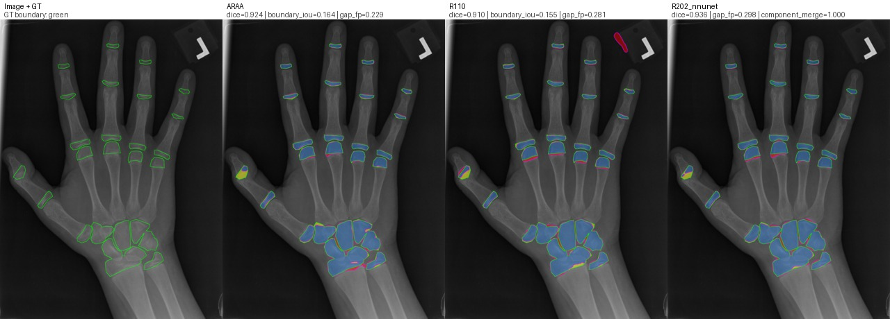
{"image": "3503.png", "priority_score": "0.07791191328890258", "failure_type": "gap_fp_candidate", "r110_dice": "0.9097810234866459", "araa_dice": "0.9236766929927743", "nnunet_dice": "0.9360538883352665", "r110_recall": "0.9271110026673469", "araa_recall": "0.9144619001935351", "r110_boundary_iou": "0.15481076151390788", "araa_boundary_iou": "0.1643115156769253", "r110_gap_fp": "0.28060147522709483", "araa_gap_fp": "0.22866019970115978", "nnunet_gap_fp": "0.2975831890520124", "r110_component_merge": "1.0", "araa_component_merge": "1.0", "nnunet_component_merge": "1.0", "r110_component_mae": "1.0", "araa_component_mae": "3.0", "nnunet_component_mae": "2.0", "component_deficit": "0.0", "merge_deficit": "0.0", "gap_excess": "0.051941275525935054", "recall_buffer_vs_araa": "0.01264910247381179", "dice_buffer_vs_araa": "-0.013895669506128416", "boundary_buffer_vs_araa": "-0.009500754163017433"}
priority=0.0772; missing_models=
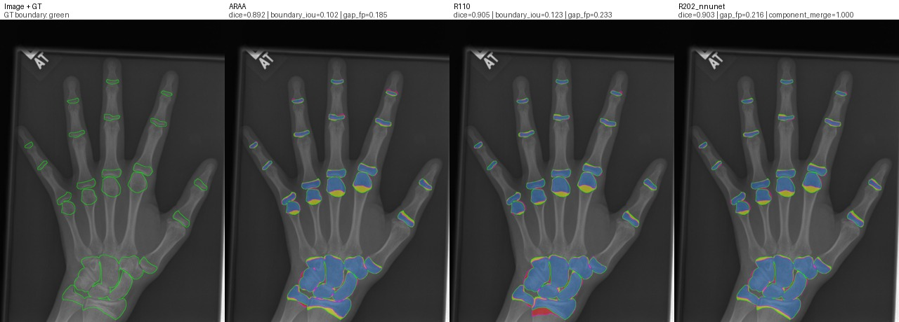
{"image": "1789.png", "priority_score": "0.0771627593132635", "failure_type": "gap_fp_candidate", "r110_dice": "0.9051968224382018", "araa_dice": "0.8920966194272217", "nnunet_dice": "0.9031442932852538", "r110_recall": "0.882340472472282", "araa_recall": "0.8365294354297975", "r110_boundary_iou": "0.1225357452339688", "araa_boundary_iou": "0.10183491034554865", "r110_gap_fp": "0.23253835120219774", "araa_gap_fp": "0.18534996231736076", "nnunet_gap_fp": "0.21607954683587388", "r110_component_merge": "0.0", "araa_component_merge": "1.0", "nnunet_component_merge": "1.0", "r110_component_mae": "1.0", "araa_component_mae": "1.0", "nnunet_component_mae": "2.0", "component_deficit": "0.0", "merge_deficit": "0.0", "gap_excess": "0.04718838888483698", "recall_buffer_vs_araa": "0.04581103704248446", "dice_buffer_vs_araa": "0.013100203010980027", "boundary_buffer_vs_araa": "0.020700834888420158"}